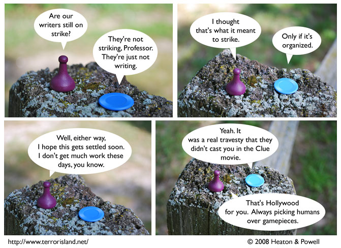

Strip #339
— Wednesday, August 13, 2008
Strike? More like spare, as in sparing you from poorly scripted strips.
Notes, Thoughts, &c.
Ben’s Notes
These comments were totally written by Ben, and not Lewis. You can tell because I am going to talk about the photography. I used a camera.
I wrote Ben’s comments today. -Lewis
Lewis’s Notes
Hey, remember that one time, when this strip hadn’t really broken the fourth wall? Well it still mostly hasn’t, because of a little thing called ‘strips outside the main continuity’. Or at least, that is what we are telling ourselves.